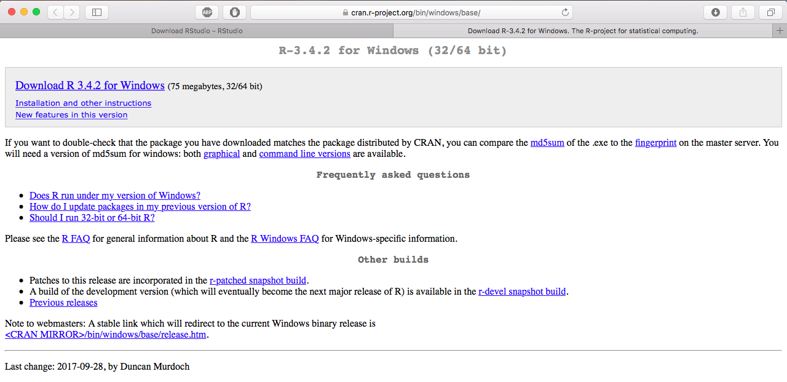
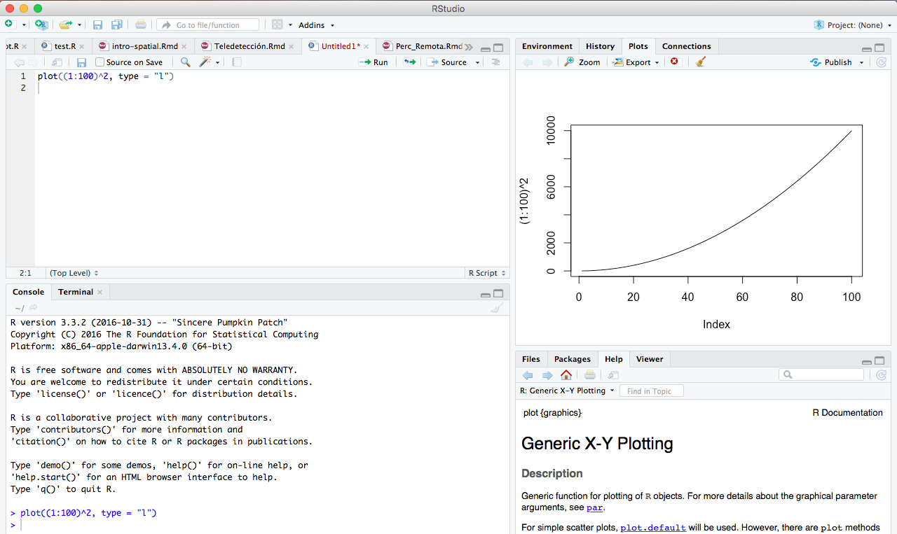
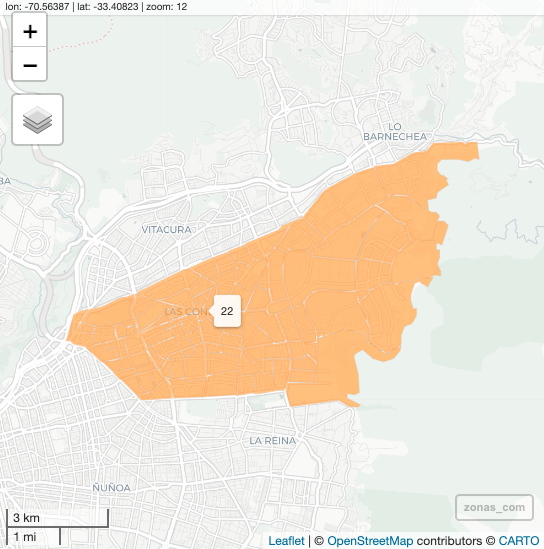

install.packages("dplyr") # Se puede instalar más de una librería a la vezAppendix A — R Project
Repaso de Lenguaje de Programación
A.1 ¿Qué es R Project?
R es un lenguaje programación multiparadigma (procedural, imperativo, orientado a objetos y funcional) enfocado a aplicaciones estadísticas. Por estadísticas se debe entender también los campos de estudio que se basan o las utilizan como económía, finanzas, ciencia de datos, machine learning, etc.
A.1.1 Ventajas de Utilizar R Project
1. R es un software libre
- La libertad de ejecutar el programa como desee y con cualquier propósito
- Estudiar el funcionamiento del programa y adaptarlo a sus necesidades.
- Rescribir copias para ayudar a los demás.
- Manejar el programa y publicar las mejorar, de manera que toda comunidad se beneficie.
2. R es multiplataforma
- R funciona en Mac, Windows y en numerosos sistemas UNIX. Esto significa que cualquier persona puede trabajar con tus datos, figuras, análisis y más importante aún usar tus instrucciones (también conocido como scripts o código) para generar las figuras y el análisis. Así que cualquier persona, y en cualquier lugar del mundo, con acceso a cualquier SO puede usar R sin ninguna licencia.
3. R es de código abierto
- Existe una gran comunidad de voluntarios trabajando para mejorarlo, lo cual permite ser moldeado y dirigido a cuestiones específicas. Creando así programas y paquetes que funcionen en el entorno R. Programas tales como R-studio, Java GUI for R, R- commander, RKWard, entre otros, y con más de 18000 paquetes indexado en CRAN, Biocoductor, GitHub y R-Forge.
4. Todo dentro de un mismo entorno
- R remplaza la combinación de varios programas para el proceso de análisis de datos, por ejemplo Excel, ArcGis, QGis, SigmaPlot, entre otros. Esto no solo resulta en el alto costo de las licencias de múltiples programas, si no también, en la gran cantidad de archivos con diferentes formatos que no podrían leer otros programas. En cambio con solo utilizar R, puedes realizar todo el análisis de datos e inclusive leer archivos de diferentes formatos.
A.1.2 Desventajas de utilizar R
- R tiene una vasta documentación de ayuda, descripción de paquetes y de funciones, que es difícil encontrar información específica en un momento dado.
- Los mensajes de error que R nos muestra, no es específica sobre los fallos que estamos realizando y solo un usuario con cierta experiencia en el uso de R puede saberlo.
A.2 Instalación de R Project
A.2.1 Instalación de R Project
Primero se debe instalar R Project desde su sitio oficial (https://cran.r-project.org/bin/windows/base/), se ejecuta el instalador que se descargó depende del sistema operativo del PC, como se muestra en las siguientes figuras:

A.2.2 Instalación de R para Windows

A.2.3 Instalar Rtools (solo Sistema Operativo Windows)


A.2.4 Instalación de R para Mac

R Project Ejecutándose

A.3 Instalación de RStudio
Se recomienta instalar Rstudio, que es Interfaz de Usuario de R Project, desde su sitio web oficial, el cual permite acceder con mayor facilidad a sus funciones y potencialidades de R.



A.3.1 RStudio Cloud
RStudio Cloud es una versión ligera del IDE RStudio alojada en la la nube que permite a cualquiera hacer, compartir, enseñar y aprender Ciencias de Datos Online. Tiene una versión gratuita limitada.
A.3.1.1 Características:
- Analyze your data using the RStudio IDE, directly from your browser.
- Share projects with your team, class, workshop or the world.
- Teach data science with R to your students or colleagues.
- Learn data science in an instructor-led environment or with interactive tutorials.


A.4 Instalar Librerías
A.4.1 Librerías en R
Las librerías o paquetes en R corresponden a una colección de funciones encapsuladas y diseñadas para atender una tarea específica. Por ejemplo, hay paquetes para trabajo visualización geoespacial, análisis psicométricos, mineria de datos, interacción con servicios de internet y muchas otras cosas más.
Estos paquetes se encuentran alojados principalmente en CRAN (Comprehensive R Archive Network), así que pasan por un control riguroso antes de estar disponibles para su uso generalizado, al día de hoy (29.11.2021) existen 18498 paquetes disponibles. En el siguiente enlace se deja una lista de temas y sus librerías asociadas disponibles, con una breve descripción (enlace)
Aunque las versiones de prueba de una librería pueden estar disponible en Github (Respositorio de Control de Versiones) de cada autor.
A.4.2 Ejemplo de Instalación de Librerías desde R
Podemos instalar paquetes usando la función install.packages(), dando como argumento el nombre del paquete que deseamos instalar, entre comillas.
Para instalar librerías se puede hacer directamente desde la consola de RStudio, por ejemplo:
A.4.3 Ejemplo de Instalación de Librerías desde Rstudio
También se pude instalar librerías del Panel “Packages”

Y por último se puede instalar desde Pestaña “Tools” -> “Install Packages”:

A.5 Definición de Directorios de Trabajos
Definir directorio de Trabajo con RStudio


Definir Directorio de Trabajo con una función
setwd("~/OneDrive - Universidad Adolfo Ibanez/FONDECYT/capacitacion_SPD")Consultar Directorio de Trabajo
getwd()[1] "/Users/denisberroeta/Library/CloudStorage/OneDrive-UniversidadAdolfoIbanez/Goblab/Reportes/reportes_book"B Variables en R
B.1 Tipos de Objetos en R
Los Datos en R se pueden clasificar por su dimensiones y los tipos de Datos que permiten almacenar, como se muestra en la siguiente tabla:
| Dimensiones | Homogéneos | Heterogéneos |
|---|---|---|
| 1d | Atomic vector | List |
| 2d | Matrix | Data frame |
| nd | Array |
Fuente: http://adv-r.had.co.nz/Data-structures.html
R nos permite definir variables que pueden ser luego usadas en las distintas operaciones. El lenguaje no solo permite definir escalares (variable de un numero), si no también variables que sean un conjunto de numero o caracteres ordenados.
B.1.1 Variables Numéricas
# La asignación en R son válidos 2 métodos '<-' o '='
x <- 7 # Definir variable (escalar) x que sea igual a 7
x # Mostrar que es x[1] 7y <- 3 + 2 * x # Crear y como funcion de x
y[1] 17class(y)[1] "numeric"Números Random con decimales
ru <- runif(n = 100, min = 1, max = 10)
ru [1] 2.599027 6.238407 1.091462 4.872230 9.113249 9.179539 6.204076 7.996360
[9] 8.704641 8.404300 2.175685 5.390514 8.850410 5.661184 1.887737 1.147605
[17] 9.575599 9.420140 1.914848 7.838614 6.726089 3.472986 7.268104 8.001247
[25] 2.306546 5.069173 9.375773 2.664452 8.280075 9.088668 6.927739 5.275491
[33] 6.077451 7.809673 5.932768 1.257889 1.815296 5.457162 8.890787 7.565953
[41] 2.796464 5.252065 2.564527 7.539949 7.298677 9.163222 4.480348 6.376982
[49] 9.265043 9.840067 1.571047 4.862408 4.221045 1.120963 2.889034 3.405810
[57] 2.338738 6.873955 4.384904 4.749276 3.176242 5.312107 9.651009 3.755958
[65] 2.272775 4.487987 5.394739 7.615611 7.238006 8.482736 9.444295 5.807458
[73] 1.255633 8.108486 8.222985 1.314802 6.853588 4.918223 6.407069 6.418060
[81] 7.223630 9.992228 6.224012 3.543980 5.908476 2.003706 3.178603 7.844733
[89] 6.686854 5.523441 9.670522 2.254419 5.222166 2.245243 1.477523 9.975876
[97] 1.341846 6.599082 2.173362 5.969267hist(ru, breaks = 20, col = "orange", border = "gray60",
main = "Histograma de valores Random")Números Random Enteros
Simular los lanzamientos de un dado
sample.int(n = 6, size = 10, replace = T) [1] 6 4 6 6 3 4 6 3 3 2B.1.2 Variables de Caracter
ch <- "Chile" # Definir variable (objeto) ch que sea la palabra "Chile"
sn <- "Santiago"
ch # Mostrar ch[1] "Chile"sn[1] "Santiago"Unir variables de texto con paste()
ch <- "Chile" # Definir variable (objeto) ch que sea la palabra "Chile"
sn <- "Santiago"
union <- paste(sn,ch, sep = ", ")
union[1] "Santiago, Chile"Utilizar paste0()
union <- paste("Provincia de ", sn,ch, sep = ", ")
union[1] "Provincia de , Santiago, Chile"union0 <- paste0("Provincia de ", sn, ", ", ch)
union0[1] "Provincia de Santiago, Chile"Buscar y reemplazar con gsub
av <- "Av. Apoquindo"
comuna <- "comuna de Las Condes"
calle <- paste(av, comuna, union0, sep = ", ")
calle[1] "Av. Apoquindo, comuna de Las Condes, Provincia de Santiago, Chile"# reemplazar Av. por Avenida
calle_new <- gsub(pattern = "Av.", replacement = "Avenida", x = calle)
calle_new[1] "Avenida Apoquindo, comuna de Las Condes, Provincia de Santiago, Chile"B.2 Estructuras de Datos
Las variables pueden ser un conjunto de números y caracteres ordenados de varias maneras. El orden que se les da depende de lo que queremos lograr con estos.
- Vector
- Matrices
- Dataframes
- Factores
- Listas
B.2.1 Vectores
Vector Cadenas unidimensionales (es decir una sola columna o fila) de un tipo único de valores (numéricos, caracteres, etc.)
vec <- c(4, 3, 1, 5, 8, 16)
vec[1] 4 3 1 5 8 16class(vec)[1] "numeric"str(vec) num [1:6] 4 3 1 5 8 16Podemos seleccionar parte del vector:
# EL primer índice en R es 1 (en otros lenguajes de programación es 0)
vec[3][1] 1La selección también puede ser hecha con una condición, de tal manera que solo seleccione aquella parte del vector que cumple con la condición.
Mayor a:
vec[vec >= 4][1] 4 5 8 16Contenido en:
vec[vec %in% c(3, 8, 7, 29)][1] 3 8Negación de la condición:
vec[!vec <= 3][1] 4 5 8 16También podemos realizar operaciones matemáticas simples aplicadas al vector, por ejemplo una suma:
vec2 <- c(7, 10, 1)
vec + vec2[1] 11 13 2 12 18 17B.2.2 Listas
Son estructuras eficientes y flexibles, que permiten combinar distintas clases de elementos :
lista <- list(1, 2, 3, "cosa", x, y)
lista[[1]]
[1] 1
[[2]]
[1] 2
[[3]]
[1] 3
[[4]]
[1] "cosa"
[[5]]
[1] 7
[[6]]
[1] 17str(lista)List of 6
$ : num 1
$ : num 2
$ : num 3
$ : chr "cosa"
$ : num 7
$ : num 17#Tambien se puede seleccionar parte de una lista, usando el doble corchete:
lista[[3]][1] 3
B.2.3 Matrices
Son estructuras de datos con 2 dimensiones, horizontal y la vertical (filas y columnas). Podemos construirlas usando la función “matrix”, con un vector inicial y sus dimensiones:
n <- matrix(c(1.3, 2.8, 3.5, 6.4, 5.3, 6.2, 7, 4.5, 2.4, 6.3, 5.6, 5.3, 6.6, 7, 4.3),
nrow = 5, ncol = 3, byrow = TRUE)
n [,1] [,2] [,3]
[1,] 1.3 2.8 3.5
[2,] 6.4 5.3 6.2
[3,] 7.0 4.5 2.4
[4,] 6.3 5.6 5.3
[5,] 6.6 7.0 4.3La matriz tiene 2 dimensiones, por lo que para seleccionar partes de ella es necesario declarar dos dimensiones separadas por una coma. A la izquierda van las filas y a la derecha las columnas. Un valor vacío indica que se seleccionan todos los valores posibles.
n[1,2][1] 2.8n[,3][1] 3.5 6.2 2.4 5.3 4.3B.2.4 Dataframes
Estructura mas clásica de datos, es una matriz pero con mas atributos como nombres de columna y/o fila. Es lo mas similar en R a una tabla excel o la tabla de atributos. La manera mas simple de crear un dataframe es a partir de una matriz usando la función as.data.frame() :
df<- as.data.frame(n)
df V1 V2 V3
1 1.3 2.8 3.5
2 6.4 5.3 6.2
3 7.0 4.5 2.4
4 6.3 5.6 5.3
5 6.6 7.0 4.3Podemos asignar nombres a las columnas del dataframe
names(df)<- c("control_1","control_2","examen")
df control_1 control_2 examen
1 1.3 2.8 3.5
2 6.4 5.3 6.2
3 7.0 4.5 2.4
4 6.3 5.6 5.3
5 6.6 7.0 4.3Y a las filas del dataframe
df$alumno <- c("Sofia","Tomas","Luciano","Julian","Gabriela")
df control_1 control_2 examen alumno
1 1.3 2.8 3.5 Sofia
2 6.4 5.3 6.2 Tomas
3 7.0 4.5 2.4 Luciano
4 6.3 5.6 5.3 Julian
5 6.6 7.0 4.3 GabrielaTambién podemos realizar operaciones entre vectores del dataframe:
df$promedio_final <- 0.3*df$control_1 + 0.3*df$control_2 + 0.4*df$examen
df control_1 control_2 examen alumno promedio_final
1 1.3 2.8 3.5 Sofia 2.63
2 6.4 5.3 6.2 Tomas 5.99
3 7.0 4.5 2.4 Luciano 4.41
4 6.3 5.6 5.3 Julian 5.69
5 6.6 7.0 4.3 Gabriela 5.80C Funciones en R
C.1 Operaciones Básicas en R
C.1.1 Operaciones Matemáticas
En R, es posible realizar operaciones matemáticas básicas utilizando los operadores aritméticos estándar. Estos operadores incluyen:
- Suma (+): se utiliza para sumar dos valores.
- Resta (-): se utiliza para restar un valor de otro.
- Multiplicación (*): se utiliza para multiplicar dos valores.
- División (/): se utiliza para dividir un valor por otro.
- Exponenciación (^): se utiliza para elevar un valor a una potencia.
- Módulo (%%): se utiliza para encontrar el resto de la división de un valor por otro.
Estos operadores se pueden utilizar con números enteros, decimales y variables numéricas. Además, también se pueden utilizar paréntesis para especificar el orden de las operaciones.
A continuación, se presentan algunos ejemplos de operaciones matemáticas básicas en R:
# Suma
2 + 3 # resultado: 5[1] 5# Resta
5 - 2 # resultado: 3[1] 3# Multiplicación
2 * 4 # resultado: 8[1] 8# División
10 / 2 # resultado: 5[1] 5# Exponenciación
2^3 # resultado: 8[1] 8# Módulo
15 %% 4 # resultado: 3[1] 3# Utilizando paréntesis para especificar el orden de las operaciones
(2 + 3) * 4 # resultado: 20[1] 20Es importante tener en cuenta que R sigue las reglas de precedencia de las operaciones matemáticas. Esto significa que las operaciones dentro de los paréntesis se evalúan primero, seguidas de la exponenciación, la multiplicación y la división, y finalmente la suma y la resta. Si se requiere un orden específico de operaciones, se deben utilizar paréntesis para indicarlo.
Además, R también cuenta con una variedad de funciones matemáticas incorporadas, como “sin”, “cos”, “tan”, “log”, “exp”, entre otras, que se pueden utilizar para realizar operaciones más complejas.
También se pueden aplica a un elemento a al objeto espacial completo
a <- 13
b <- c(20,30,22,2,1)
sum(b) # suma[1] 75sqrt(b) # find the square root of x[1] 4.472136 5.477226 4.690416 1.414214 1.000000mean(b)[1] 15min(b)[1] 1max(b)[1] 30C.1.2 Funciones Útiles de propósito general
rep(1, 10) [1] 1 1 1 1 1 1 1 1 1 1rep("HAHA", 10) [1] "HAHA" "HAHA" "HAHA" "HAHA" "HAHA" "HAHA" "HAHA" "HAHA" "HAHA" "HAHA"seq(1, 10) [1] 1 2 3 4 5 6 7 8 9 10seq(1, 10, by = 2)[1] 1 3 5 7 9ifelse(3 > 5, 1, "this is false")[1] "this is false"paste("Hola", "amigo")[1] "Hola amigo"paste("Hello", "amigo", sep = "--")[1] "Hello--amigo"paste0("Hello", "amigo")[1] "Helloamigo"tolower("HAHAHAHAH")[1] "hahahahah"toupper("hueuehuehuheuhe")[1] "HUEUEHUEHUHEUHE"C.2 Operaciones Lógicas
En R, los operadores lógicos se utilizan para realizar comparaciones lógicas entre valores o expresiones. Estos operadores devuelven valores booleanos (TRUE o FALSE) según se cumpla o no la condición.
A continuación se presentan los operadores lógicos en R:
| Operador | Significado | Ejemplo |
|---|---|---|
| == | Igual a | 2 == 2 (TRUE) |
| != | Diferente a | 2 != 3 (TRUE) |
| > | Mayor que | 3 > 2 (TRUE) |
| < | Menor que | 2 < 3 (TRUE) |
| >= | Mayor o igual que | 3 >= 2 (TRUE) |
| <= | Menor o igual que | 2 <= 3 (TRUE) |
| & | Operador lógico AND | 2 < 3 & 3 > 1 (TRUE) |
| | | Operador lógico OR | 2 < 3 | 3 < 1 (TRUE) |
| ! | Operador lógico NOT | !(2 == 3) (TRUE) |
C.2.1 Operador de igualdad: (==)
Este operador se utiliza para comparar si dos valores son iguales. Retorna TRUE si la condición se cumple y FALSE en caso contrario.
a <- 2
b <- 3
a == b # FALSE[1] FALSEC.2.2 Operador de desigualdad: (!=)
Este operador se utiliza para comparar si dos valores son diferentes. Retorna TRUE si la condición se cumple y FALSE en caso contrario.
a <- 2
b <- 3
a != b # TRUE[1] TRUEC.2.3 Operador de mayor que: (>)
Este operador se utiliza para comparar si un valor es mayor que otro. Retorna TRUE si la condición se cumple y FALSE en caso contrario.
a <- 2
b <- 3
b > a # TRUE[1] TRUEC.2.4 Operador de menor que: (<)
Este operador se utiliza para comparar si un valor es menor que otro. Retorna TRUE si la condición se cumple y FALSE en caso contrario.
a <- 2
b <- 3
a < b # TRUE[1] TRUEC.2.5 Operador de mayor o igual que: (>=)
Este operador se utiliza para comparar si un valor es mayor o igual que otro. Retorna TRUE si la condición se cumple y FALSE en caso contrario.
a <- 2
b <- 3
b >= a # TRUE[1] TRUEC.2.6 Operador de menor o igual que: (<=)
Este operador se utiliza para comparar si un valor es menor o igual que otro. Retorna TRUE si la condición se cumple y FALSE en caso contrario.
a <- 2
b <- 3
a <= b # TRUE[1] TRUEC.2.7 Operador lógico AND: (&)
Este operador se utiliza para evaluar dos o más condiciones y retornar TRUE si todas se cumplen, de lo contrario retorna FALSE.
a <- 2
b <- 3
c <- 4
a < b & b < c # TRUE[1] TRUEC.2.8 Operador lógico OR: (|)
Este operador se utiliza para evaluar dos o más condiciones y retornar TRUE si al menos una se cumple, de lo contrario retorna FALSE.
a <- 2
b <- 3
c <- 4
a > b | b < c # TRUE[1] TRUEOperador lógico NOT: (!) Este operador se utiliza para negar una condición. Si la condición es TRUE, retorna FALSE, y si la condición es FALSE, retorna TRUE.
a <- 2
b <- 3
!(a == b) # TRUE[1] TRUEEs importante tener en cuenta que los operadores lógicos se pueden utilizar en combinación para crear expresiones lógicas más complejas. Además, los operadores lógicos también se pueden utilizar en las estructuras de control condicionales, como if/else y switch, para tomar decisiones basadas en condiciones lógicas.
C.3 Crear Funciones Propias
En R, es posible crear funciones propias para realizar tareas específicas y reutilizarlas en diferentes partes de un programa. Para crear una función en R, se utiliza la siguiente estructura:
nombre_de_la_funcion <- function(argumentos) {
cuerpo_de_la_funcion
}Por ejemplo, se puede crear una función que calcule la suma de dos números:
suma <- function(a, b) {
resultado <- a + b
return(resultado)
}
resultado_suma <- suma(2, 3)
print(resultado_suma) # 5[1] 5Por ejemplo, se puede crear una función que eleve al cuadrado:
cuadrado <- function(x) { # x = parámetro
y = x ^ 2 # asiganción de variables solo dentro de la función
return(y) # especificar valor retornado (no necesario completamente)
}
a <- 13
b <- c(20,30,22,2,1)
cuadrado(a)[1] 169cuadrado(b)[1] 400 900 484 4 1Es importante tener en cuenta que los nombres de las funciones en R deben cumplir las mismas reglas que los nombres de las variables. Además, es recomendable incluir comentarios explicativos dentro del cuerpo de la función para facilitar su comprensión y uso posterior.
Actividad:
Actividad: Crear una función que calcule la hipotenusa de un triángulo rectángulo (Teorema de Pitágoras):
Establece que el cuadrado de la longitud de la hipotenusa es igual a la suma de los cuadrados de las longitudes de los catetos.
c^2 = {a^2}+{b^2}
Por lo cual:
c = \sqrt{{a^2}+{b^2}}
Ayuda
hipotenusa <- function(a, b){
#h <- # En esta parte escribir la función
return(h)
}
r1 <- hipotenusa(a = 5, b = 5)Encontrar la Hipotenusa de:
h=?, a = 10, b = 6
h=?, a = 5, b = 4
h=?, a = 3, b = 4
D Estructura de Control en R
Las estructuras de control en R son herramientas que permiten controlar el flujo de ejecución de un programa. Las estructuras de control son esenciales para cualquier lenguaje de programación, ya que permiten que el programa tome decisiones y realice acciones en función de ciertas condiciones.
Estas estructuras de control son muy útiles para crear programas que respondan a diferentes situaciones y condiciones, y permiten que los programadores puedan crear soluciones más eficientes y complejas.
En R, existen tres estructuras de control principales:
Estructuras condicionales: Permiten ejecutar un bloque de código solo si se cumple una condición determinada. Las estructuras condicionales más comunes en R son “
if” y “ifelse”.Estructuras de bucles: Permiten ejecutar un bloque de código repetidamente, mientras se cumpla una condición determinada. Las estructuras de bucles más comunes en R son “
while”, “for” y “repeat”.Estructuras de control de flujo: Permiten cambiar el flujo de ejecución del programa en función de ciertas condiciones. Las estructuras de control de flujo más comunes en R son “
break” y “next”.
D.1 Estructuras condicionales
Las estructuras condicionales son una de las tres estructuras de control principales en R. Estas estructuras permiten ejecutar un bloque de código solo si se cumple una condición determinada.
La estructura condicional más común en R es “if”. La sintaxis básica de la estructura “if” es la siguiente:
if(Condición) {
operaciones_si_la_condición_es_TRUE
}La “condición” es una expresión lógica que evalúa a verdadero o falso. Si la condición es verdadera, el bloque de código dentro del “if” se ejecutará. Si la condición es falsa, el bloque de código dentro del “if” se ignorará.
Por ejemplo, le pedimos a R que nos muestre el texto “Verdadero” si la condición se cumple.
# Se cumple la condición y se muestra "verdadero"
if(4 > 3) {
"Verdadero"
}[1] "Verdadero"# No se cumple la condición y no pasa nada
if(4 > 5) {
"Verdadero"
}También se puede agregar un bloque de código opcional para el caso en que la condición sea falsa utilizando la estructura “else”. La sintaxis básica de la estructura “if” con “else” es la siguie
SI esta condición es es cierta, ENTONCES haz estas operaciones, DE OTRO MODO haz estas otras operaciones.
if(condición) {
operaciones_si_la_condición_es_TRUE
} else {
operaciones_si_la_condición_es_FALSE
}Usando los ejemplos anteriores, podemos mostrar “Falso” si no se cumple la condición, en lugar de que no ocurra nada
# Se cumple la condición y se muestra "Verdadero"
if(4 > 3) {
"Verdadero"
} else {
"Falso"
}[1] "Verdadero"La estructura “ifelse” es otra forma de estructura condicional que permite ejecutar diferentes bloques de código en función de la condición. La sintaxis básica de la estructura “ifelse” es la siguiente:
ifelse(condición, expresión1, expresión2)Si la “condición” es verdadera, se ejecutará “expresión1”. Si la “condición” es falsa, se ejecutará “expresión2”.
Además, se pueden anidar varias estructuras condicionales utilizando la sintaxis de “if” y “else”. Por ejemplo:
if (condición1) {
# Código a ejecutar si la condición1 es verdadera
} else if (condición2) {
# Código a ejecutar si la condición1 es falsa y la condición2 es verdadera
} else {
# Código a ejecutar si todas las condiciones son falsas
}En resumen, las estructuras condicionales en R son herramientas muy útiles para controlar el flujo de ejecución de un programa en función de ciertas condiciones. Estas estructuras permiten crear soluciones más eficientes y complejas al permitir que los programas tomen decisiones y realicen acciones en función de las condiciones que se presenten.
D.2 Estructuras de bucles
Las estructuras de bucles son una de las tres estructuras de control principales en R. Estas estructuras permiten ejecutar un bloque de código repetidamente mientras se cumpla una condición determinada. En R, existen tres estructuras de bucles principales: “while”, “for” y “repeat”.
Beneficios
- Es más fácil ver el objetivo de tu código; lo diferente llama más atención a la vista que aquello que permanece igual.
- Es más sencillo responder a cambios en los requerimientos. A medida que tus necesidades cambian, solo necesitarás realizar cambios en un lugar, en vez de recordar cambiar en cada lugar donde copiaste y pegaste el código.
- Es probable que tengas menos errores porque cada línea de código es utilizada en más lugares.
D.2.1 Estructura de bucle “for”:
La estructura “for” permite repetir la ejecución de un bloque de código un número determinado de veces. La sintaxis básica de la estructura “for” es la siguiente:
for (variable in secuencia) {
# Código a ejecutar para cada elemento en la secuencia
}La “secuencia” es un objeto que contiene una serie de elementos. La “variable” toma el valor de cada elemento de la secuencia en cada iteración del bucle. En cada iteración, se ejecutará el bloque de código dentro del “for” para ese valor de la variable.
Ejemplo simple: print una secuencia
for (i in 1:5){
print(i)
}[1] 1
[1] 2
[1] 3
[1] 4
[1] 5Ejemplo 2: Guardando los resultados en un vector
dado <- 1:6
mi_vector <- NULL
for(cara in dado) {
mi_vector[cara] <- cara ^ 2
}
mi_vector[1] 1 4 9 16 25 36Ejemplo 3: Loops con vectores
alumnos <- c("Carmen", "Adriana", "Marco", "Fabi", "Brenda")
for(i in 1:length(alumnos)) {
print(paste("Hola,", alumnos[i], sep = " "))
}[1] "Hola, Carmen"
[1] "Hola, Adriana"
[1] "Hola, Marco"
[1] "Hola, Fabi"
[1] "Hola, Brenda"Ejemplo 4: loops en Dataframes
df <- data.frame(a = rnorm(10), b = rnorm(10),
c = rnorm(10), d = rnorm(10))
for(i in 1:ncol(df)){
promedio = mean(df[,i])
print(promedio)
}[1] -0.3734848
[1] -0.2833167
[1] 0.2720512
[1] -0.06885443D.2.2 Estructura de bucle “while”:
La estructura “while” permite repetir la ejecución de un bloque de código mientras se cumpla una condición determinada. La sintaxis básica de la estructura “while” es la siguiente:
while (condición) {
# Código a ejecutar mientras se cumpla la condición
}La “condición” es una expresión lógica que evalúa a verdadero o falso. Si la condición es verdadera, se ejecutará el bloque de código dentro del “while”. Este proceso se repetirá hasta que la condición sea falsa.
D.2.3 Estructura de bucle “repeat”:
repeat {
# Código a ejecutar de manera indefinida
if (condición) {
break
}
}El bloque de código dentro del “repeat” se ejecutará de manera indefinida hasta que se encuentre la sentencia “break”, que permite salir del bucle. La “condición” es una expresión lógica que evalúa a verdadero o falso. Si la condición es verdadera, se ejecutará la sentencia “break” y se saldrá del bucle.
D.3 Estructuras de control de flujo
“next” y “break” son palabras clave importantes en R que se utilizan en las estructuras de control de flujo, específicamente en las estructuras de bucle. “next” se utiliza para saltar a la siguiente iteración del bucle sin ejecutar el resto del código dentro del bucle, mientras que “break” se utiliza para detener el bucle de forma abrupta, incluso si la condición del bucle todavía se cumple.
D.3.1 Estructuras de control “next”:
“next” se utiliza en una estructura de bucle para saltar a la siguiente iteración del bucle sin ejecutar el resto del código dentro del bucle. Es decir, si se encuentra la palabra clave “next” dentro de un bucle, se omitirá el código que viene después y el bucle pasará inmediatamente a la siguiente iteración. La palabra clave “next” es útil cuando se desea saltar una iteración específica del bucle, sin afectar el resto del código.
Por ejemplo, en el siguiente código se utiliza la palabra clave “next” para omitir la impresión del número 3 dentro del bucle “for”:
for (i in 1:5) {
if (i == 3) {
next
}
print(i)
}[1] 1
[1] 2
[1] 4
[1] 5D.3.2 Estructuras de control “break”:
“break”, por otro lado, se utiliza en una estructura de bucle para detener el bucle de forma abrupta, incluso si la condición del bucle todavía se cumple. Es decir, si se encuentra la palabra clave “break” dentro de un bucle, se detendrá el bucle de inmediato y se continuará con la ejecución del código que viene después del bucle. La palabra clave “break” es útil cuando se desea detener el bucle en un punto específico sin tener que esperar a que la condición del bucle se deje de cumplir.
Por ejemplo, en el siguiente código se utiliza la palabra clave “break” para detener el bucle “while” cuando el valor de “i” es mayor que 5:
i <- 1
while (i < 10) {
if (i > 5) {
break
}
print(i)
i <- i + 1
}[1] 1
[1] 2
[1] 3
[1] 4
[1] 5E Tidyverse en R
E.1 Introducción a Tidyverse
Tidyverse es una colección de paquetes diseñados para Ciencia de Datos.

# instalación
install.packages("tidyverse")Todos los paquetes comparten una filosofía de diseño, una gramática y estructuras de datos.
Esta filosofía promueve
- En Pipes, navegarás dentro del pipe,
%>%, para anidar instrucciones - Si bien copiar-y-pegar (copy-and-paste) es una herramienta poderosa, deberías evitar utilizarla más de dos veces. Repetir el código es peligroso porque puede llevar a errores e inconsistencias.
- A medida que comiences a escribir funciones más potentes, necesitarás una base sólida acerca de las estructuras de datos.
- Las funciones nos permiten evitar la repetición de código; sin embargo, muchas veces necesitas repertir las mismas acciones con diferentes inputs. Puedes hacer esto con herramientas de iteración.
E.2 Estructura de un dataframe

Lectura de Base de SII
suppressPackageStartupMessages(library(dplyr))
suppressPackageStartupMessages(library(sf))
tbl_sii <- readRDS("data/sii/mz_constru_SII.rds") %>%
st_drop_geometry() # descartar geometrias solo usar la tabla de datos
head(tbl_sii)# A tibble: 6 × 10
n_com manzana reg cod_com num_manz oficinas comercio vivienda total AREA
<chr> <chr> <dbl> <dbl> <dbl> <dbl> <dbl> <dbl> <dbl> <dbl>
1 IQUIQUE 1201-0 1 1201 0 0 0 0 0 585.
2 IQUIQUE 1201-0 1 1201 0 0 0 0 0 17291.
3 ALTO H… 1211-0 1 1211 0 0 0 0 0 1859.
4 ALTO H… 1211-0 1 1211 0 0 0 0 0 442.
5 ALTO H… 1211-0 1 1211 0 0 0 0 0 205.
6 ALTO H… 1211-0 1 1211 0 0 0 0 0 1200.E.3 Funciones básicas dplyr

E.3.1 Select
select Seleccionar variables relevantes
# seleccionar nomnres de columnas que deseo conservar
tbl_sii %>%
select(n_com, oficinas, comercio, vivienda)# A tibble: 210,662 × 4
n_com oficinas comercio vivienda
<chr> <dbl> <dbl> <dbl>
1 IQUIQUE 0 0 0
2 IQUIQUE 0 0 0
3 ALTO HOSPICIO 0 0 0
4 ALTO HOSPICIO 0 0 0
5 ALTO HOSPICIO 0 0 0
6 ALTO HOSPICIO 0 0 0
7 ALTO HOSPICIO 0 0 0
8 ALTO HOSPICIO 0 0 0
9 ALTO HOSPICIO 0 0 0
10 ALTO HOSPICIO 0 0 0
# ℹ 210,652 more rows# seleccionar nomnres de columnas que deseo eliminar anteponiendo un "-"
tbl_sii %>%
select(-cod_com)# A tibble: 210,662 × 9
n_com manzana reg num_manz oficinas comercio vivienda total AREA
<chr> <chr> <dbl> <dbl> <dbl> <dbl> <dbl> <dbl> <dbl>
1 IQUIQUE 1201-0 1 0 0 0 0 0 585.
2 IQUIQUE 1201-0 1 0 0 0 0 0 17291.
3 ALTO HOSPICIO 1211-0 1 0 0 0 0 0 1859.
4 ALTO HOSPICIO 1211-0 1 0 0 0 0 0 442.
5 ALTO HOSPICIO 1211-0 1 0 0 0 0 0 205.
6 ALTO HOSPICIO 1211-0 1 0 0 0 0 0 1200.
7 ALTO HOSPICIO 1211-0 1 0 0 0 0 0 4548.
8 ALTO HOSPICIO 1211-0 1 0 0 0 0 0 130.
9 ALTO HOSPICIO 1211-0 1 0 0 0 0 0 300.
10 ALTO HOSPICIO 1211-0 1 0 0 0 0 0 6488.
# ℹ 210,652 more rowsE.3.2 Filter
mi_comuna <- "LAS CONDES"
sii_com <- tbl_sii %>%
filter(n_com == mi_comuna)
head(sii_com, 5)# A tibble: 5 × 10
n_com manzana reg cod_com num_manz oficinas comercio vivienda total AREA
<chr> <chr> <dbl> <dbl> <dbl> <dbl> <dbl> <dbl> <dbl> <dbl>
1 LAS CON… 15108-… 13 15108 2358 0 0 1316 1390 2358.
2 LAS CON… 15108-… 13 15108 2360 0 0 1590 1622 2280.
3 LAS CON… 15108-… 13 15108 2362 0 0 1436 1502 2659.
4 LAS CON… 15108-… 13 15108 2364 0 0 1926 1926 3348.
5 LAS CON… 15108-… 13 15108 2366 0 0 2584 2656 4390.filter: Operadores Lógicos
| Operador | Comparación | Ejemplo | Resultado |
|---|---|---|---|
| x | y | x Ó y es verdadero | TRUE | FALSE | TRUE |
| x & y | x Y y son verdaderos | TRUE & FALSE | FALSE |
| !x | x no es verdadero (negación) | !TRUE | FALSE |
| isTRUE(x) | x es verdadero (afirmación) | isTRUE(TRUE) | TRUE |
Filtrar las manzanas que tengan valores de oficina y comercio mayores a 0
sii_com %>%
filter(oficinas > 0 & comercio > 0) # A tibble: 493 × 10
n_com manzana reg cod_com num_manz oficinas comercio vivienda total AREA
<chr> <chr> <dbl> <dbl> <dbl> <dbl> <dbl> <dbl> <dbl> <dbl>
1 LAS … 15108-… 13 15108 2400 322 3388 65422 1.22e5 1.06e5
2 LAS … 15108-… 13 15108 2407 30864 2518 0 7.50e4 4.04e3
3 LAS … 15108-… 13 15108 1392 424 9902 0 1.58e4 1.27e4
4 LAS … 15108-… 13 15108 336 45190 1432 0 8.28e4 3.24e3
5 LAS … 15108-… 13 15108 338 424. 244. 9993. 1.17e4 1.11e4
6 LAS … 15108-… 13 15108 338 414. 238. 9765. 1.14e4 1.06e4
7 LAS … 15108-… 13 15108 339 1120 5274 7748 1.49e4 9.38e3
8 LAS … 15108-… 13 15108 340 250 72 55206 7.23e4 1.22e4
9 LAS … 15108-… 13 15108 342 494 1914 47690 6.97e4 1.62e4
10 LAS … 15108-… 13 15108 349 17826 1568 0 3.38e4 1.84e3
# ℹ 483 more rowsE.4 Resúmenes Estadísticos con dplyr

Contabilizar cuantos metros cuadrados de oficina por cada comuna.
tbl_resumen <- tbl_sii %>%
group_by(n_com) %>%
summarise(Cantidad_mz = n(),
Total_of = sum(oficinas)) %>%
arrange(desc(Total_of)) # Ordenar
tbl_resumen# A tibble: 170 × 3
n_com Cantidad_mz Total_of
<chr> <int> <dbl>
1 SANTIAGO CENTRO 686 6105996
2 LAS CONDES 2310 4248336
3 PROVIDENCIA 885 3495426
4 HUECHURABA 1160 1006138
5 QUILICURA 2592 751874
6 VITACURA 950 743734
7 SANTIAGO SUR 623 669270
8 ÑUÑOA 1337 637982
9 SANTIAGO OESTE 586 586724
10 PUDAHUEL 2775 561868
# ℹ 160 more rowsActividad
- Contabilizar cuantos metros cuadrados de Comercio hay por cada comuna rdenar de mayor a menor.
- Crear tabla con las 10 comunas que tienen mayor densisdad de Comercio
Densidad de comercio
Se puede entender como la división de la cantidad de metros cuadrados de comercio dividio por el total de metros cuadrados.
E.5 Visualización de Variables
E.5.1 Función Plot
options(scipen = 999) # evitas notación cientiífica
hist(sii_com$vivienda, breaks = 50,
main = "Histograma mt2 de Viviendas", col = "#225ea8")
# colores:https://colorbrewer2.org/#type=sequential&scheme=BuGn&n=3E.5.2 Package ggplot2
library(ggplot2)
ggplot(sii_com, aes(x = vivienda)) +
geom_histogram(bins = 50, fill = "#225ea8", color ="black")
ggplot2 con estilos y características
ggplot(sii_com, aes(x = vivienda)) +
geom_histogram(bins = 50, color = "#c7e9b4", fill = "#1d91c0")+
theme_bw()+
labs(title="Histograma mt2 de Viviendas", x ="Mt2. Viviendas", y = "Frecuencias")+
theme(plot.title = element_text(face = "bold",colour= "gray60", size=10)) 
F Objetos Espaciales en R
F.1 Introducción
Un rasgo es una cosa, un objeto del mundo real, como un edificio o un árbol. Al igual que los objetos, suelen estar formados por otros objetos. Lo mismo ocurre con los rasgos: un conjunto de rasgos puede formar un único rasgo. Una masa forestal puede ser un rasgo, un bosque puede ser un rasgo, una ciudad puede ser un rasgo. Un píxel de una imagen de satélite puede ser un rasgo, una imagen completa también puede ser un rasgo.
Los elementos tienen una geometría que describe su ubicación en la Tierra y atributos que describen otras propiedades. La geometría de un árbol puede ser la delineación de su copa, de su tallo o el punto que indica su centro. Otras propiedades pueden ser su altura, color, diámetro a la altura del pecho en una fecha determinada, etc.
F.2 Lectura de Insumos Espaciales
# install.packages("sf")
library(sf)
crs_ll <- "+proj=longlat +datum=WGS84 +no_defs"
crs_utm <- "+proj=utm +zone=19 +south +datum=WGS84 +units=m +no_defs +ellps=WGS84 +towgs84=0,0,0"
censo <- readRDS("data/censo/zonas_urb_consolidadas.rds")F.3 Transformar a objeto sf (simple features)
# transformar a objeto sf (simple features)
censo_sf <- st_as_sf(censo)
# head(censo_sf)
names(censo_sf) [1] "REGION" "NOM_REGION" "PROVINCIA" "NOM_PROVIN" "COMUNA"
[6] "NOM_COMUNA" "URBANO" "DISTRITO" "LOC_ZON" "GEOCODIGO"
[11] "AREA" "COD_INE_15" "COD_INE_16" "VALIDO" "KM2"
[16] "ESC_JH" "PERS" "M2_O" "M2_C" "DENS_HAB"
[21] "DENS_OF" "DENS_COM" "geometry" F.4 Filtros espaciales por data
library(dplyr)
mi_communa <- "LAS CONDES"
zonas_com <- censo_sf %>%
filter(NOM_COMUNA == mi_communa)
zonas_com %>% head()Simple feature collection with 6 features and 22 fields
Geometry type: MULTIPOLYGON
Dimension: XY
Bounding box: xmin: -70.56629 ymin: -33.41713 xmax: -70.47884 ymax: -33.36421
Geodetic CRS: +proj=longlat +datum=WGS84 +ellps=WGS84 +towgs84=0,0,0
REGION NOM_REGION PROVINCIA NOM_PROVIN COMUNA
1 13 REGIÓN METROPOLITANA DE SANTIAGO 131 SANTIAGO 13114
2 13 REGIÓN METROPOLITANA DE SANTIAGO 131 SANTIAGO 13114
3 13 REGIÓN METROPOLITANA DE SANTIAGO 131 SANTIAGO 13114
4 13 REGIÓN METROPOLITANA DE SANTIAGO 131 SANTIAGO 13114
5 13 REGIÓN METROPOLITANA DE SANTIAGO 131 SANTIAGO 13114
6 13 REGIÓN METROPOLITANA DE SANTIAGO 131 SANTIAGO 13114
NOM_COMUNA URBANO DISTRITO LOC_ZON GEOCODIGO AREA COD_INE_15
1 LAS CONDES LAS CONDES 5 1 13114051001 346506.4 13114051001
2 LAS CONDES LAS CONDES 4 1 13114041001 2797019.6 13114041001
3 LAS CONDES LAS CONDES 4 3 13114041003 2530681.2 13114041003
4 LAS CONDES LAS CONDES 16 2 13114161002 1497554.8 13114161002
5 LAS CONDES LAS CONDES 15 3 13114151003 855603.3 13114151003
6 LAS CONDES LAS CONDES 2 2 13114021002 594053.2 13114021002
COD_INE_16 VALIDO KM2 ESC_JH PERS M2_O M2_C DENS_HAB
1 13114051001 TRUE 0.3465064 16.08958 4173 10910.000 18578.00 12043.068
2 13114041001 TRUE 2.7970196 16.34331 4788 5820.806 48723.11 1711.822
3 13114041003 TRUE 2.5306812 16.19528 6315 125513.194 84384.89 2495.376
4 13114161002 TRUE 1.4975548 16.75400 2250 738.000 72.00 1502.449
5 13114151003 TRUE 0.8556033 16.84848 4675 1130.005 51982.94 5463.981
6 13114021002 TRUE 0.5940532 15.85904 3987 24382.000 298226.00 6711.520
DENS_OF DENS_COM geometry
1 31485.7121 53615.17494 MULTIPOLYGON (((-70.56008 -...
2 2081.0745 17419.65356 MULTIPOLYGON (((-70.47951 -...
3 49596.6041 33344.73221 MULTIPOLYGON (((-70.5267 -3...
4 492.8033 48.07838 MULTIPOLYGON (((-70.50789 -...
5 1320.7117 60755.89536 MULTIPOLYGON (((-70.51477 -...
6 41043.4616 502019.00493 MULTIPOLYGON (((-70.53606 -...F.5 Visualización Cartográficas
F.5.1 Visualización estática Simple
## Visualizar
# Consideración el plot se realiza sobre la columna geometry
nombre_plot <- paste0("COMUNA DE ", mi_communa)
plot(zonas_com$geometry, main = nombre_plot,col ="orange")
F.5.2 Visualización estática con ggplot2
library(ggplot2)
# Visualización ggplot y sf
ggplot() +
geom_sf(data = zonas_com, fill = "orange", alpha=0.5)+
ggtitle(nombre_plot) +
theme_bw() +
theme(legend.position="none")+
theme(panel.grid.major = element_line(colour = "gray80"),
panel.grid.minor = element_line(colour = "gray80"))
F.5.3 Visualización Dinámica con mapview
# install.packages("mapview")
library(mapview)
m <- mapview(zonas_com, alpha = 0.5,
col.regions = "orange", color="gray80",
legend =FALSE, cex = 3)
m 
F.6 Referencias:
- R para Ciencia de Datos
- RStudio para Estadística Descriptiva en Ciencias Sociales
- https://bookdown.org/jboscomendoza/r-principiantes4/estructuras-de-control.html
- https://rstudio-pubs-static.s3.amazonaws.com/623888_497a5388a98545c48e9b5b6bec4056f6.html
- Paletas de colores
- https://bookdown.org/jboscomendoza/r-principiantes4/estructuras-de-control.html
- https://es.r4ds.hadley.nz/iteración.html
- https://rstudio-pubs-static.s3.amazonaws.com/623888_497a5388a98545c48e9b5b6bec4056f6.html
- Simple Features for R